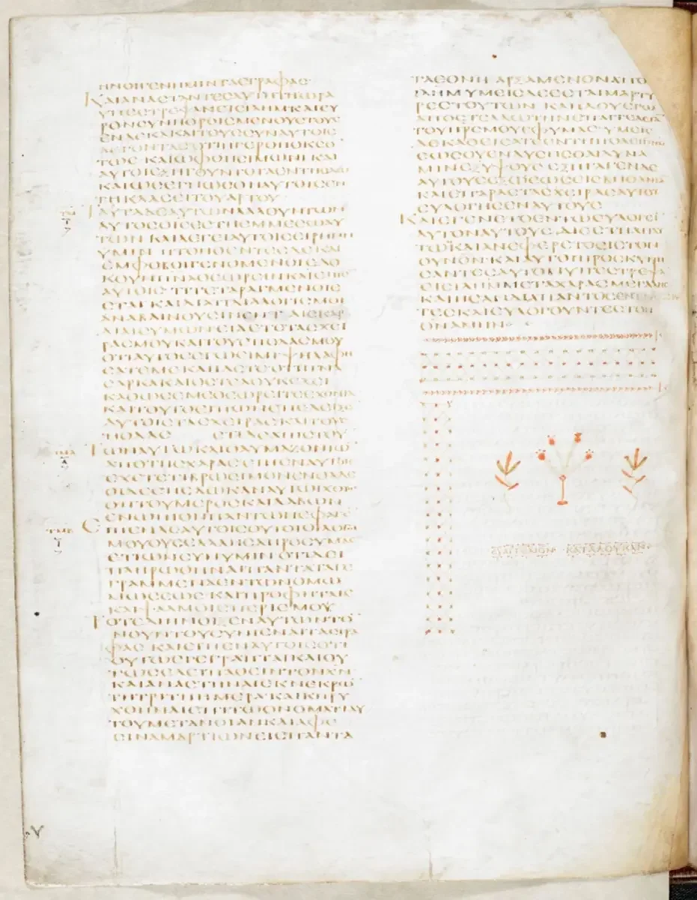
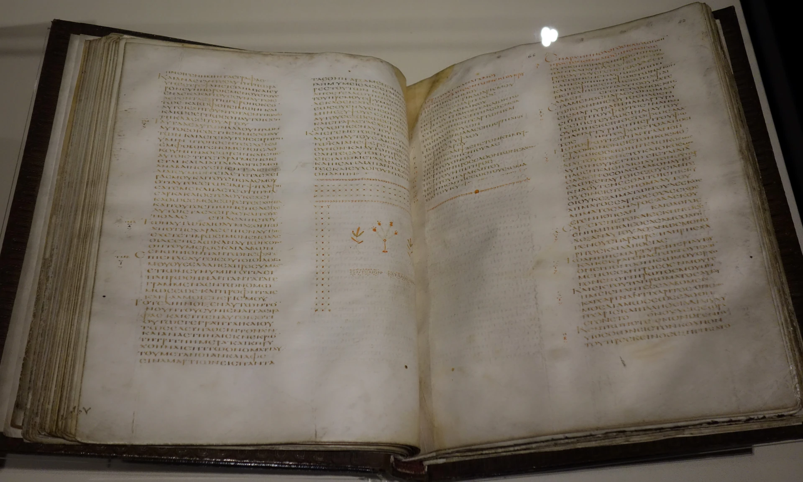
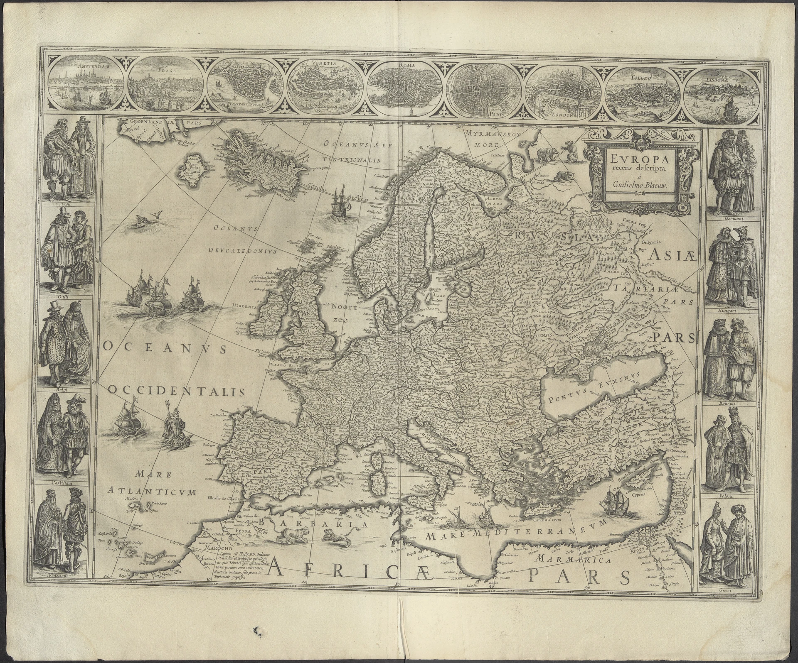
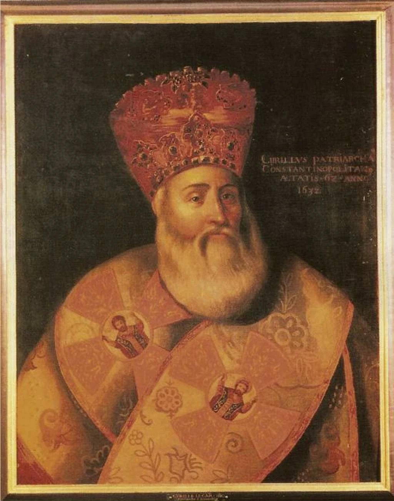
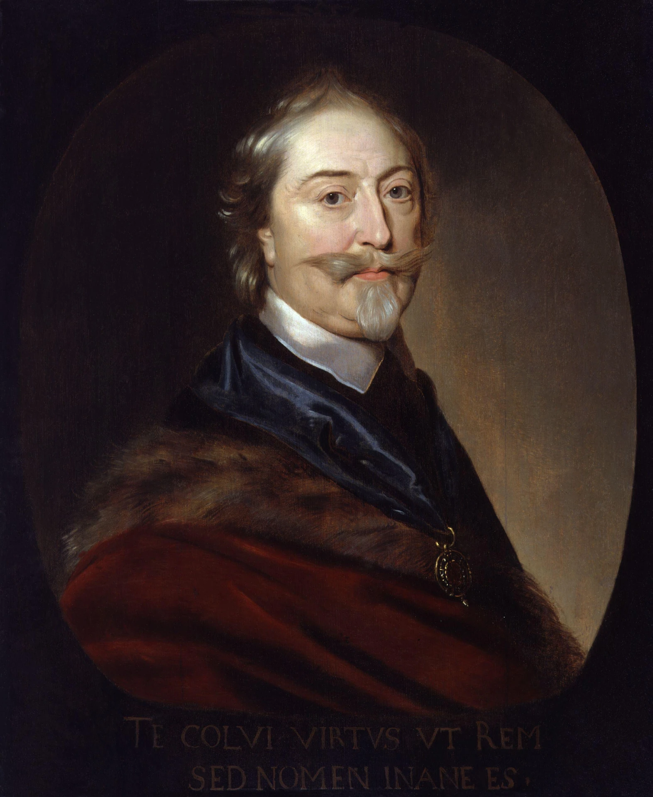
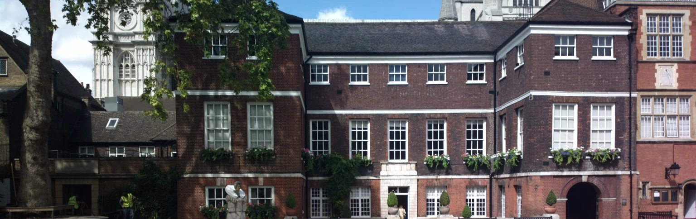

아직 펼치지 않은 카드가장 오래된 성경을 찾아서 · 4알렉산드리아 사본5세기 손글씨 성경이 콘스탄티노폴리스를 거쳐 영국 왕에게 선물로 갔어요. 그런데 이 선물을 받은 왕은 처음 받기로 한 왕이 아니었어요. 무슨 일이 있었을까요?옛날 성경이 바다 건너 영국 임금님께 선물로 갔대!
13세기 ~ 1731년알렉산드리아 → 콘스탄티노폴리스 → 런던
알렉산드리아 사본
‘이 책을 가져가는 사람은 교회에서 쫓겨나리라(파문).’ 알렉산드리아 총대주교의 방에 딸려 있던 5세기 성경 사본(손으로 베껴 쓴 책)이 콘스탄티노폴리스(오늘의 이스탄불)를 거쳐 영국 왕의 새해 선물이 되었어요. 1641년 유럽 지도 위에서 그 길을 따라가고, 1731년 불이 난 밤까지 가 보세요.
이집트의 교회가 지키던 아주 오래된 성경이 먼 영국까지 선물로 갔대. 지도에서 같이 따라가 볼까?
검수 전 시안이에요(기준서 1판). 책에 남은 메모와 1732년 화재 보고서, 대영도서관 목록을 따라 썼어요. 테클라가 썼다는 이야기와 벤틀리의 잠옷 이야기는 전해지는 이야기라고 밝혔어요. 상상은 ‘눈 감고 상상해 보기’에만 썼어요.
시안 확인용카드 단계 미리 보기
1
총대주교의 방에 딸린 책
5세기에 그리스어로 손으로 쓴 이 성경은 오랫동안 이집트 알렉산드리아의 총대주교가 지켰어요. 총대주교는 로마, 콘스탄티노폴리스, 알렉산드리아처럼 오래된 큰 도시의 교회를 이끄는 가장 높은 성직자예요.
이 책의 첫째 권(지금은 네 권으로 나뉘어 있어요) 앞쪽에는 13~14세기의 알렉산드리아 총대주교 아타나시오스 3세가 아랍어로 남긴 메모가 있어요. 이 책이 지나온 길의 기록은 이 메모부터 시작해요.

“알렉산드리아 요새 안, 총대주교의 방에 딸린 책. 이 책을 그곳에서 가져가는 사람은 교회에서 쫓겨나 교회와 끊어지리라.”
아타나시오스 3세(알렉산드리아 총대주교, 1276~1316년)의 아랍어 메모 · 대영도서관 목록의 영어를 이 안내서가 옮김
17세기 초에는 ‘순교자 테클라가 썼다’는 아랍어 메모가 더해졌고, 루카리스 총대주교(둘째 장면에서 이 책을 옮긴 사람)는 라틴어로 ‘니케아 공의회(325년 교회의 큰 회의) 직후 테클라가 썼다’고 적었어요. 학자들은 글씨를 보고 5세기에 쓴 것으로 봐요. 테클라 이야기가 왜 전설인지는 아래 ‘더 깊이’의 둘째 물음에서 이어져요.
아주 옛날 이집트의 교회가 지키던 성경이야. ‘가져가면 안 돼!’라는 메모도 있대.
물어보기‘가져가면 안 돼!’라는 메모를 왜 적었을까?
2
바다를 건넌 새해 선물
1601년부터 알렉산드리아 총대주교였던 키릴로스 루카리스는 1621년 콘스탄티노폴리스 총대주교가 되면서, 이 책을 이집트에서 콘스탄티노폴리스로 가져갔어요.
아래 지도는 이 책이 런던에 닿고 14년 뒤인 1641년, 암스테르담에서 인쇄한 유럽 지도예요. 이 책이 다니던 무렵의 유럽을 그때 사람들의 눈으로 보려고 골랐어요. ‘다음 곳으로’를 눌러 책이 간 길을 따라가 보세요.
‘다음 곳으로’를 눌러 책이 간 길을 따라가 보세요.

알렉산드리아콘스탄티노폴리스런던빌럼 블라우의 유럽 지도, 1641년 암스테르담 · 지도: 빌럼 얀스존 블라우 · 퍼블릭 도메인 · 고타 연구 도서관 · 위키미디어 공용
알렉산드리아에서 런던까지, 책은 바다와 대륙을 건넜어요. 이제 1731년 10월의 밤으로 가 볼까요?
지도 위 선은 책이 머문 곳을 이은 것이고, 실제로 지난 뱃길이나 땅길은 아니에요. 지도 맨 위 둥근 그림 아홉 개 가운데 셋째가 콘스탄티노폴리스, 일곱째가 런던의 모습이에요.
이집트에서 콘스탄티노폴리스를 지나 영국 런던까지 갔대!
물어보기아주 먼 길이야. 어떻게 갔을지 상상해 볼까?
3
총대주교와 영국 대사
루카리스는 크레타섬에서 태어나 알렉산드리아와 콘스탄티노폴리스의 총대주교를 지냈어요. 영국 캔터베리 대주교(영국 국교회의 가장 높은 성직자)와도 편지를 주고받았어요.
토머스 로는 1621년부터 1628년까지 오스만 제국(콘스탄티노폴리스를 서울로 둔 나라)에 머문 영국 대사예요. 루카리스와 가깝게 지냈고, 자신도 귀한 사본을 모아 옥스퍼드 대학의 보들리 도서관에 보냈어요.


1625년 루카리스는 이 책을 제임스 1세에게 드릴 새해 선물로 로에게 내놓았어요. 그러나 왕은 그해 세상을 떠났고, 1627년 로를 거쳐 새 왕 찰스 1세에게 새해 선물로 갔어요. 루카리스는 1638년에 세상을 떠났어요.
이집트 교회의 큰 어른이 영국 대사에게 선물을 맡겼대.
물어보기멀리 사는 친구에게 가장 소중한 것을 선물한다면 무엇을 줄래?
4
1731년 10월의 밤
1731년 10월 23일 새벽 두 시쯤, 런던 웨스트민스터의 애시버넘 하우스에서 연기가 피어올랐어요. 왕실 도서관과 코튼 도서관(수집가 로버트 코튼이 모아 나라에 맡긴 사본들)의 책을 맡아 두던 집이고, 왕실 도서관을 맡은 학자 리처드 벤틀리가 살던 집이에요.
불은 책 방 아래층 난로 굴뚝에 걸친 나무 들보(굵은 나무)에서 시작됐어요. 사람들은 책을 창밖으로 던지고, 웨스트민스터 학교의 방과 작은 회랑(지붕 덮인 복도)으로 옮겼어요.

“부사서 케이슬리는 무엇보다 먼저, 그 유명한 알렉산드리아 사본과 ‘아우구스투스’ 책장의 책들을 옮기는 데 마음을 썼다. 모든 책 가운데 가장 귀하게 여겨졌기 때문이다.”
「애시버넘 하우스 화재 이야기」, 1732년 코튼 도서관 위원회 보고서 · 이 안내서가 옮김
부사서는 도서관의 부책임자이고, ‘아우구스투스’ 책장은 로마 황제 아우구스투스의 머리상을 얹은 책장이에요. 보고서와 달리, 웨스트민스터 학교의 로버트 프렌드는 한 편지에서 잠옷 차림에 큰 가발을 쓴 벤틀리가 이 사본을 품에 끼고 나왔다고 전했어요(아래 ‘더 찾아보기’의 ‘기록마다 다른 점’).
보고서는 코튼 도서관 958권 가운데 114권이 타거나 못 쓰게 되었다고 적었어요. 왕실 도서관의 책이던 알렉산드리아 사본은 살아남았어요.
한밤중에 불이 났어. 사람들이 이 성경부터 꺼냈대.
물어보기그 밤 책을 지킨 사람들은 어떤 마음이었을까?
눈 감고 상상해 보기
새벽 두 시, 매캐한 연기 냄새에 잠이 깨요. 복도 끝 방에서 붉은 빛이 새어 나와요. 누군가 무거운 양피지 책을 품에 안고 계단을 내려가요. 창밖으로 책들이 하나둘 던져지고, 마당의 사람들이 받아 안아요. 천삼백 년 가까이 건너온 책이, 이 밤도 무사히 살아남기를.
눈을 감아 봐. 한밤중이야. 연기 냄새가 나! 누가 무거운 책을 꼭 안고 계단을 내려가. 휴, 책이 무사해.
나의 자리
불이 난다면 가장 먼저 품에 안고 나올, 내가 받은 귀한 선물은 무엇인가요?
불이 나면 가장 먼저 챙길 보물은 뭐야?
마음에 닿는 한 줄을 고르거나 직접 써 보세요. 한 줄을 남기면 이 자리의 도장이 찍혀요. 이 기기에만 저장돼요.
더 깊이
이야기를 보다 궁금해질 만한 것들이에요. 답을 읽거나 짧은 영화로 보세요.
테클라가 썼다는 메모, 정말이에요?
불이 났을 때, 왜 이 책부터 꺼냈어요?
뒷이야기
아직 펼치지 않은 이야기예요. 누르면 이야기가 펼쳐지고 색이 돌아와요. 더 알고 싶으면 근거를 따라가 보세요.
다 펼치면, 다음에 오실 때 새 이야기가 찾아와요.
오늘의 뒷이야기는 여기까지예요. 다음에 오시면 새 이야기가 기다리고 있어요.
펼친 뒷이야기 · 누르면 다시 볼 수 있어요
더 찾아보기
기록마다 다른 점
어디서 썼을까 가톨릭 백과사전은 글씨와 지나온 길로 보아 이집트에서 썼다고 봐요. 대영도서관 목록은 13~14세기에 총대주교 아타나시오스 3세가 이 책을 알렉산드리아로 가져왔다고 적어요.
루카리스가 알렉산드리아 총대주교가 된 해 1601년이라는 자료도, 1602년이라는 자료(브리태니커)도 있어요.
누가 썼을까 17세기의 메모들은 순교자 테클라가 썼다고 하지만, 그 무렵의 테클라라는 순교자는 알려져 있지 않아요. 학자들은 글씨를 보고 5세기 앞쪽이나 가운데쯤으로 봐요.
1624년일까, 1625년일까 루카리스가 제임스 1세에게 줄 선물로 내놓은 해를 1624년으로 적은 책도 있지만, 대영도서관 목록은 1625년의 로의 편지를 근거로 1625년이라고 적어요.
누가 들고 나왔을까 1732년 보고서는 부사서 케이슬리가 이 사본을 맨 먼저 옮겼다고 적어요. 프렌드의 편지는 잠옷 차림의 벤틀리가 이 사본을 끼고 나왔다고 전하고, 훗날에는 창문으로 뛰어내렸다는 이야기까지 덧붙었지만 그럴 가능성은 낮다고 봐요.
그림 속 벤틀리
1710년, 마흔여덟 살의 벤틀리를 제임스 손힐이 그린 초상이에요. 고전 학자였던 그는 왕실 도서관을 맡아 애시버넘 하우스에 살았어요.
함께 읽는 말씀
말씀은 뜻만 옮기고, 본문은 대한성서공회 개역개정으로 이어 드려요.
요한복음 1장 1절 ‘태초에 말씀이 계셨다’로 시작하는 요한복음의 첫 구절이에요. 위 사진 오른쪽 쪽, 붉은 글씨로 시작하는 곳이에요.
누가복음 24장 사진 왼쪽 쪽에서 꼬리 장식과 함께 끝나는 누가복음의 마지막 장이에요.
직접 가 보기 · 집에서 읽기
확인한 날 · 2026년 11월 18일 · 바뀌기 쉬운 정보라 정기적으로 다시 확인해요
런던 대영도서관에 있어요. 신약 권은 보물실에 전시되어 왔지만 전시물이 자주 바뀌니 가시기 전에 확인해 주세요.
집에서는 대영도서관 목록에서 네 권(Royal MS 1 D V~VIII)의 설명과 메모를 읽을 수 있어요. 1732년 화재 보고서도 영어로 읽을 수 있어요.
런던까지 따라가기 금박
지도 위에서 알렉산드리아부터 런던까지 마지막 곳에 닿으면 카드에 금박이 입혀져요.
지도 위 길을 런던까지 따라가기
아이와 함께 채색
아이와 함께 ‘영화처럼 보기’를 끝까지 보면 카드가 채색돼요.
아이와 함께 ‘영화처럼 보기’를 끝까지 보기
근거 보기 (28)
- 대영도서관 목록: Royal MS 1 D VIII(넷째 권, 신약) — 재벌: 아타나시오스 3세가 알렉산드리아로 가져옴, 클레멘스의 두 글, 「솔로몬의 시편」은 첫째 권 목차에만, 복음서 여백의 에우세비오스 번호, 꼬리 장식 · 붉은 첫 줄 · 단 바깥의 큰 첫 글자 · 첫 제목과 끝 제목
- 브리태니커 백과사전: Cyril Lucaris — 1572년 크레타, 베네치아 · 파도바 · 비텐베르크 · 제네바, 1602년 알렉산드리아 · 1620년 콘스탄티노폴리스 총대주교, 1629년 신앙 고백, 다섯 번 물러남, 영국 · 네덜란드 외교관의 도움, 젊은 신학생을 외국 대학으로, 1638년 고발과 죽음
- 재커리 퍼비스, Bible on the Bosporus(Modern Reformation, 2024) — 자리를 지키도록 도운 데 대한 고마움으로 알렉산드리아 사본을 영국에
- 옥스퍼드 대학 인문학부: Diplomacy beyond Print(박사 연구 과제 안내) — 로와 루카리스의 우정이 찰스 1세에게 가는 선물로, 구약과 신약을 함께 담은 그리스어 사본으로 남은 셋 가운데 하나
- B. F. 해리스, Richard Bentley and the Text of the Greek Testament(「에반젤리컬 쿼털리」 34권 4호, 1962) — 1627년 A의 도착, 1657년 월턴의 주석, 케니언의 ‘신약 본문 연구의 진짜 시작’, 벤틀리의 1716년 편지 · 1720년 계획서 · 끝내 나오지 못한 책
- 가톨릭 백과사전: Pope St. Clement I · Apocrypha(1908) — 클레멘스의 첫째 편지(96년 무렵 고린도 교회에), 둘째 편지는 옛 설교, 1875년 브리엔니오스, 「솔로몬의 시편」 열여덟 편(기원전 63년 무렵)
- 앤드루 프레스콧, ‘Their Present Miserable State of Cremation’: the Restoration of the Cotton Library — 13권이 완전히 탐, 5세기 그리스어 「창세기」, 「베오울프」, 다음 날 아침의 학교 아이들
- 로버트 바틀릿, 『History in Flames』(케임브리지 대학 출판부, 2025) 발췌(Literary Hub) — 황제 머리상을 얹은 책장, 「베오울프」는 하나뿐인 온전한 기록
- 대영도서관 중세 사본 블로그(2018) — 로마 황제와 황실 여인 이름의 책장 체계를 지금도 따름, 1731년 불
- 엔사이클로피디아 로마나(제임스 그라우트): Vitellius A. xv — 비텔리우스 머리상 아래 첫째 칸의 열다섯째 책
- 웨스트민스터 학교: History, Archives and Collections · The Library — 1659~1665년 애시버넘 하우스, 1731년 새 기숙사, 1881년 학교가 사들임, 학교 도서관의 아홉 방
- 더블린 트리니티 칼리지 도서관 블로그: Canon Tables, an Index of the Gospels(콜린 토머스) — 에우세비오스의 열 개 표, 누가복음 342단락, 단락 번호 아래 표 번호
- 클레어 잭슨, 「런던 리뷰 오브 북스」 45권 19호(2023) — 로는 무굴 궁정에 간 영국의 첫 대사, 1616년 자한기르, 1619년 돌아옴
- 보들리 도서관 Roe Manuscripts(Archives Hub) — 로의 사본 30권(1628년), 사본마다 고마움의 라틴어 글, 1621년 9월~1628년 여름 오스만 궁정
- 영국 국립 초상화 미술관: Sir Thomas Roe(NPG 1354) — 미레펠트의 그림을 본뜬 그림, 1640년 그림을 바탕으로
- 올드 월드 옥션스 · 렌 헬밍크 고지도 설명(고스 인용) — 블라우 유럽 지도의 열 나라 옷차림, 아홉 도시, 배 · 바다 괴물 · 곰 · 넵투누스
- 대한성서공회 개역개정: 요한복음 7장 53절~8장 11절 — 【 】로 묶음
- 대영도서관 목록: Royal MS 1 D V(알렉산드리아 사본 첫째 권) — 5세기, 320×280mm, 왕의 문장과 CR 표지, 아타나시오스 3세(1276~1316)의 아랍어 메모, 테클라 메모(17세기 초), 루카리스의 라틴어 메모, 1621년 콘스탄티노폴리스로, 1625년 로에게 제임스 1세의 새해 선물로(1625년 로가 아런들 백작에게 쓴 편지), 1627년 찰스 1세, 1757년 대영박물관 · 재벌: 1626/7년 1월에 건넴, 1098년이라 적은 17세기 라틴어 메모
- 「애시버넘 하우스 화재 이야기」(1732년 코튼 도서관 위원회 보고서 부록, 애비 뉴스레터 2001년 재수록) — 새벽 두 시쯤 벤틀리가 연기를 봄, 나무 들보에서 시작, 케이슬리가 알렉산드리아 사본을 맨 먼저 옮김, 창밖으로 던짐, 웨스트민스터 학교 방과 작은 회랑, 958권 가운데 114권 · 재벌: 아우구스투스 머리상 아래 책을 가장 귀하게 여김, 젖은 양피지를 한 장씩 넘겨 말림, 746권 온전 · 98권 상함
- 대영도서관 목록: Royal MS 1 D VIII(넷째 권, 신약) — 큰 단락 끝의 꼬리 장식, 책마다 첫 몇 줄은 붉은 잉크, 누가복음 20r~41v·요한복음 42r
- History Today: The Burning of a British Library — 벤틀리가 가발과 잠옷 차림으로 알렉산드리아 사본을 구함, 창문으로 뛰어내렸다는 이야기는 그럴 법하지 않음 · 재벌: 1701년 나라에 맡김, 1730년 ‘불에서 훨씬 안전한’ 애시버넘 하우스로
- 로빈슨 칼리지(케임브리지) 소장품 설명: Sir Robert Cotton — 벤틀리 이야기는 웨스트민스터 학교 로버트 프렌드가 선던 부인에게 쓴 편지에서 나옴
- Catholic Encyclopedia(1908): Codex Alexandrinus — 월턴의 ‘A’와 글자로 부르는 방식, 773장(원래 822장), 두 단 49~51줄, 테클라 메모와 그 무렵 그런 순교자는 알려지지 않음, 5세기 앞쪽·가운데 · 재벌: 에우세비오스의 표(340년)와 아타나시오스의 편지(373년)가 테클라 증언을 무너뜨림, 요한복음 두 장이 없고 간음한 여인 이야기는 없었음, 클레멘스의 두 글은 그때 알려진 유일한 사본, 「솔로몬의 시편」은 목차에만
- Facsimiles.com: Codex Alexandrinus — 1624년 로에게 제임스 1세의 선물로, 1627년 찰스 1세, 1657년 런던 폴리글롯
- Wikipedia: Cyril Lucaris — 길잡이(1572년 크레타, 1601년 알렉산드리아 총대주교, 콘스탄티노폴리스 총대주교, 캔터베리 대주교와 편지, 1638년 죽음)
- Wikipedia: Thomas Roe — 길잡이(1621~1628년 오스만 제국 대사, 루카리스와의 친분, 보들리 도서관에 사본)
- Wikipedia: Ashburnham House — 길잡이(1730년 왕실이 빌림, 코튼·왕실 도서관, 벤틀리의 집, 1882년부터 웨스트민스터 학교)
- 위키미디어 공용: 블라우의 유럽 지도(1641년 암스테르담, 고타 연구 도서관) — 지도 위 알렉산드리아·콘스탄티노폴리스·런던과 맨 위 도시 그림은 그림을 눈으로 확인
그림·사진·소리 출처
- 지도: 빌럼 얀스존 블라우 · 퍼블릭 도메인 · 고타 연구 도서관 · 위키미디어 공용
- 사진: Daderot · CC0 · 위키미디어 공용
- 그림: 그린 이 모름 · 퍼블릭 도메인 · 위키미디어 공용
- 그림: 미힐 얀스존 판 미레펠트의 그림을 본뜸 · 퍼블릭 도메인 · 영국 국립 초상화 미술관 · 위키미디어 공용
- 그림: 제임스 손힐 · 퍼블릭 도메인 · 영국 국립 초상화 미술관 · 위키미디어 공용
- 사진: Shakespearesmonkey · CC BY 2.0 · 위키미디어 공용 · 아래쪽을 잘라 씀
- 지도: 빌럼 얀스존 블라우 · 퍼블릭 도메인 · 고타 연구 도서관 · 위키미디어 공용
- 자료: 알렉산드리아 사본(5세기), 대영도서관 · 퍼블릭 도메인 · 위키미디어 공용
‘처음 만나는 기독교 문화’의 깊은 카드예요. 실제 인물의 사진은 쓰지 않았어요. 카드 단계와 남긴 글은 이 기기에만 저장돼요.